Project Title
Student
More Information
First Link
Second Link
Enter VR Mode
Diplomausstellung 2020
ZHdK - Knowledge Visualisation

Drag to look around
Use arrowkeys to move
Exhibition is loading
Enter exhibition